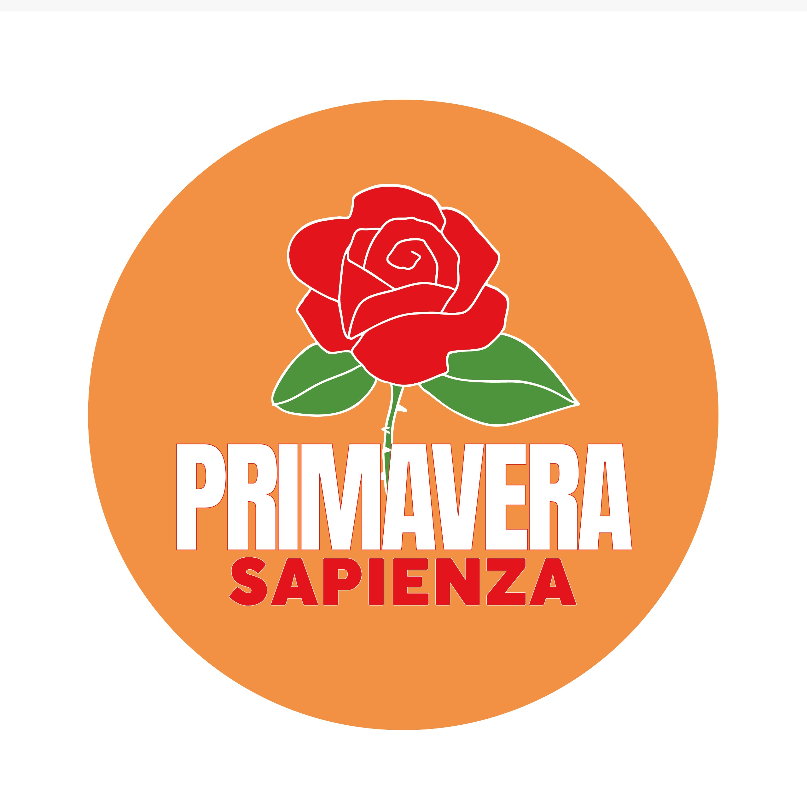

APPENA SEGNALATODalla Città Universitaria
CITTÀ UNIVERSITARIA
Da prendere in carico
0 persone sostengono questa segnalazione

primaverafix+Nuova segnalazioneClicca sulla mappa, usa il menù per segnalare in modo immediato guasti, problemi di riscaldamento, infiltrazioni, aule inagibili e tanto altro.
Ogni segnalazione è un passo avanti.